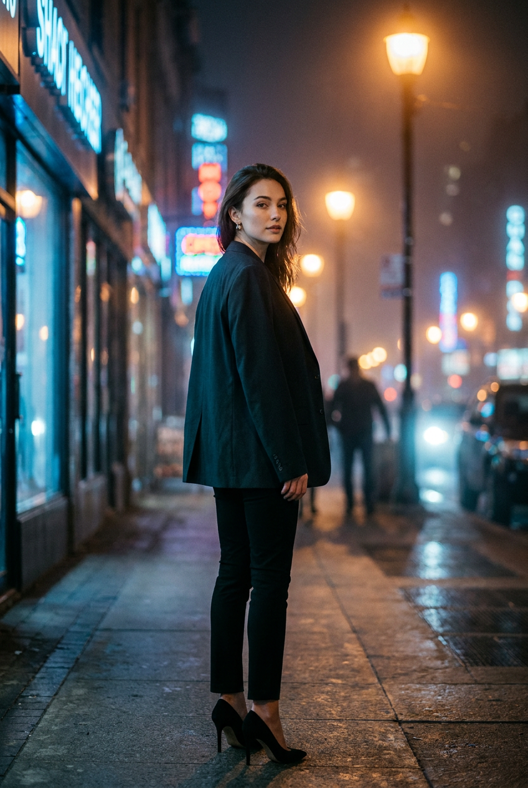
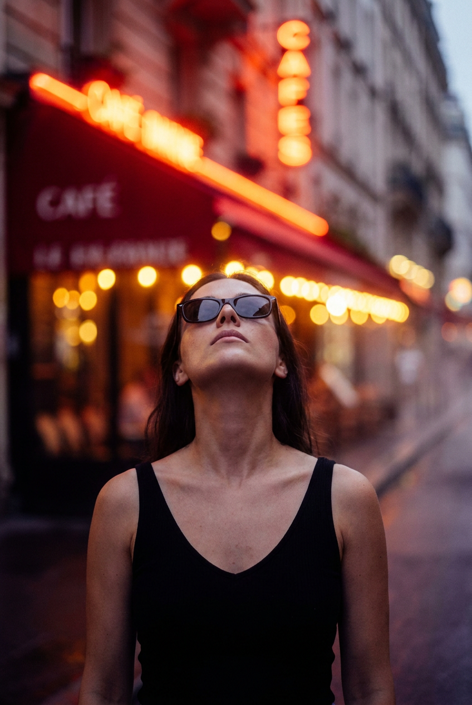
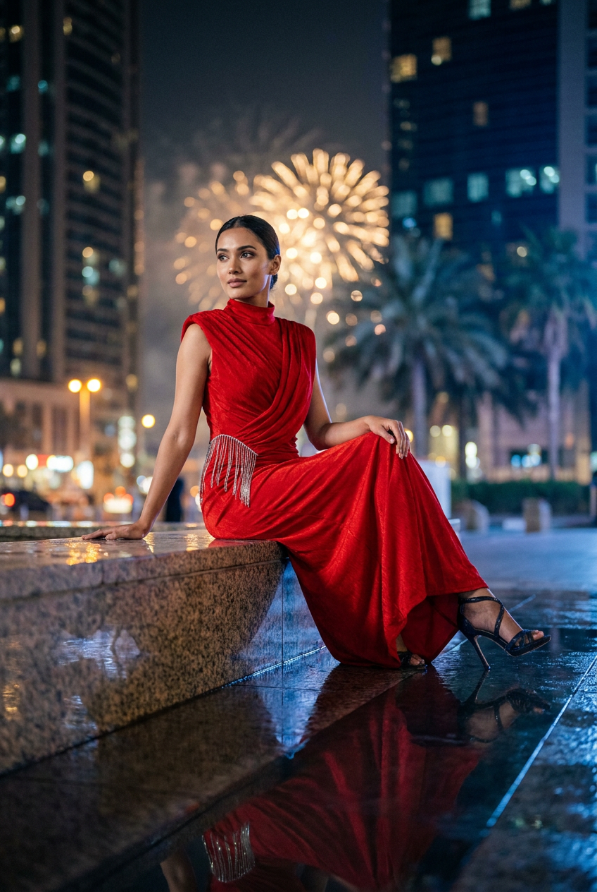
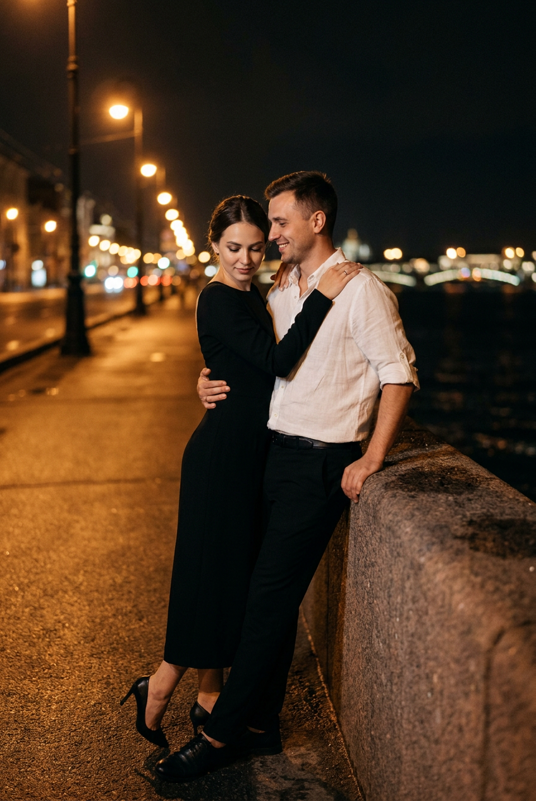
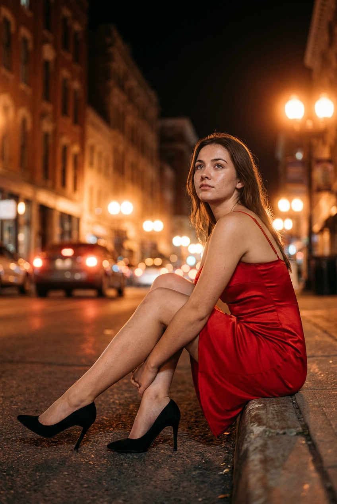
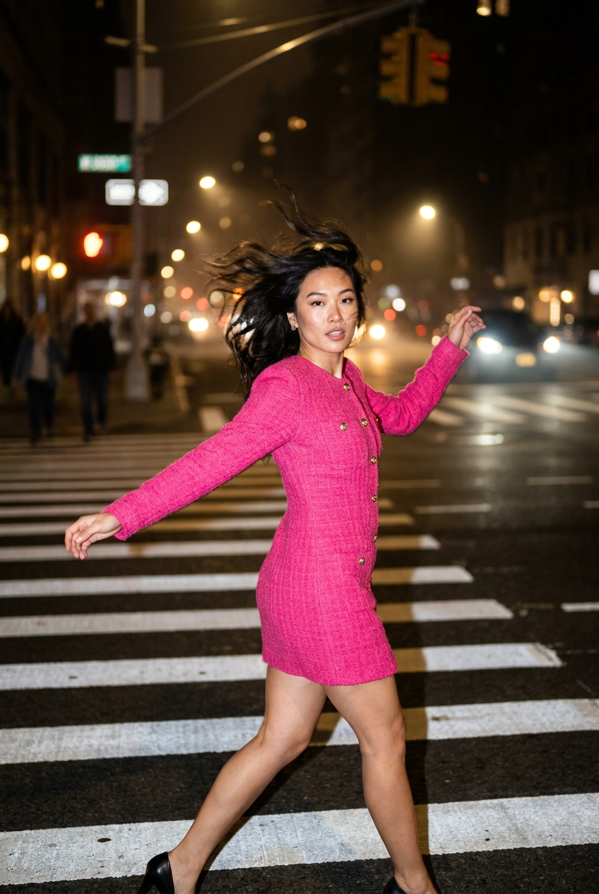
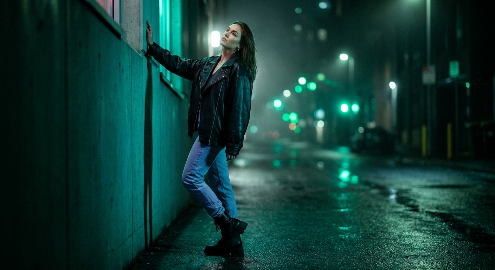
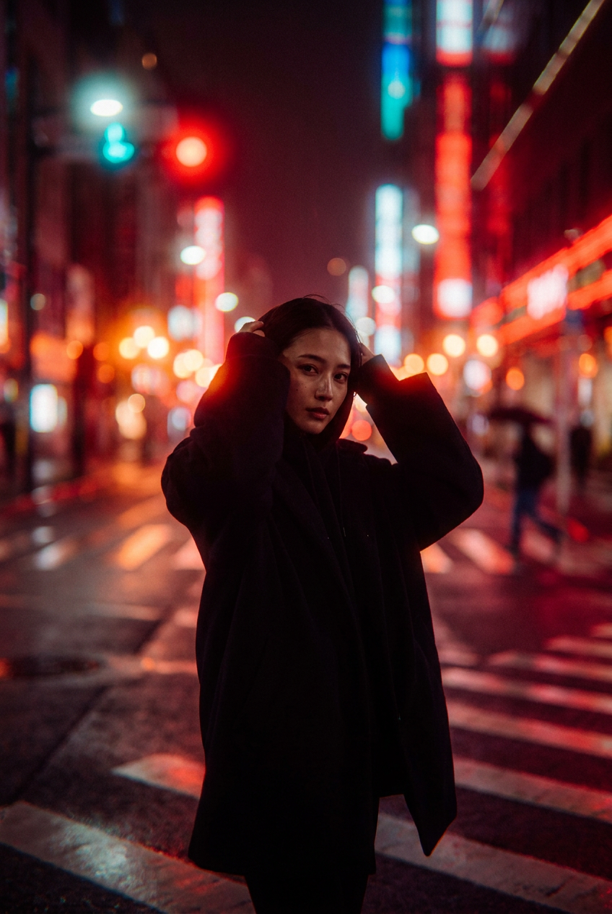
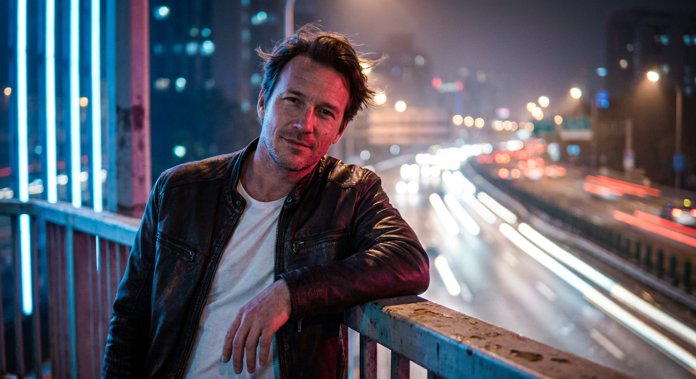
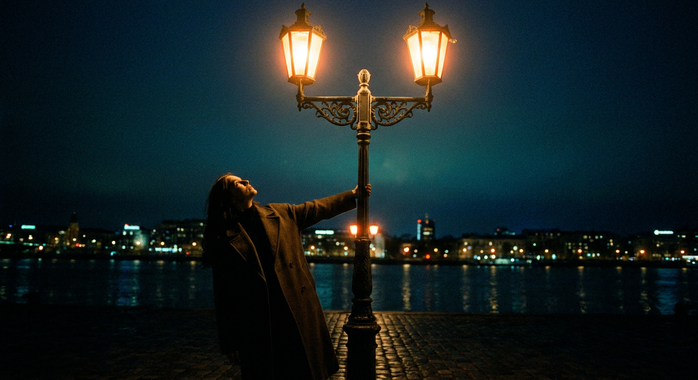

ИИ-фото в ночном городе: 10 промптов для нейросети

Ночной кадр часто выглядит плоско: лицо теряется в тенях, неон превращается в цветное пятно, а мокрый асфальт не отражает свет. Генерация по подробному промпту помогает заранее задать ракурс, позу, глубину резкости и настроение сцены.
В подборке — десять сценариев для портретов в городе: прогулка среди витрин, кафе с красным неоном, мокрая площадь у небоскрёбов, романтическая набережная, зебра, переулок, силуэт на перекрёстке и ночная трасса.
Как сгенерировать такое фото: пошагово
Нужен снимок анфас при ровном свете, лицо в кадре целиком, без тёмных очков и головных уборов. Разрешение от 1000 пикселей по короткой стороне. Чем чётче исходник, тем точнее модель повторит черты.
Выберите сценарий ниже и нажмите «Копировать» — текст уйдёт в буфер целиком, вместе с командой сохранения внешности. Эта команда стоит первой строкой и отвечает за то, чтобы на выходе было ваше лицо, а не случайное.
Кнопка «Сгенерировать» рядом с каждым промптом открывает модель в новой вкладке. Nano Banana Pro работает с референсом лица — в отличие от моделей, которые генерируют портрет с нуля и узнаваемость теряют.
Промпт — в поле ввода, портрет — через загрузку референса. Порядок значения не имеет, но без референса команда сохранения внешности работать не будет: модели нечего сохранять.
Для сторис и ленты берите 9:16, для превью и обложек — 4:3. Первый результат редко идеален: если поза или свет ушли не туда, поправьте соответствующую часть промпта и запустите заново. Обычно хватает двух-трёх итераций.
10 промптов для генерации
1. Прогулка среди витрин
Строго сохранить внешность по загруженному референсу: черты лица, пропорции, мимику и текстуру кожи без изменений. Вертикальный ночной портрет девушки на пешеходной дорожке в большом городе, формат 4:5, разрешение 1536×1920. Слева улицу подсвечивают витрины и холодноватый неон, справа стоят тёплые фонари. Героиня расположена немного левее центра, корпус развёрнут на три четверти, почти боком. Она словно только что оглянулась: голова повёрнута к камере, взгляд спокойный и уверенный, мимика естественная, руки свободно опущены, одна слегка согнута. Лицо взять с загруженного референса, без изменения формы глаз, бровей, носа, губ, овала и пропорций. Линии плитки, бордюр или дорожная разметка уходят в перспективу и ведут взгляд в глубину. На дальнем плане — редкие вывески и силуэты прохожих, полностью размытые. Лёгкая ночная дымка рассеивает свет. Съёмка на 50 мм, f/1.8, малая глубина резкости, мягкое боке, реалистичная кожа и кинематографичный цвет.
2. Красный неон кафе

Строго сохранить внешность по загруженному референсу: черты лица, пропорции, мимику и текстуру кожи без изменений. Сделай вертикальный fashion-портрет у входа в ночное кафе или ресторан, соотношение сторон 4:5, камера установлена низко и смотрит снизу вверх, объектив 35 мм, f/1.8. Девушка стоит почти в центре кадра и слегка запрокидывает голову, направляя взгляд вверх. Выражение лица сдержанное, уверенное; на глазах чёрные стрелки или насыщенный тёмный макияж. Лицо использовать по загруженному референсу, сохранив индивидуальные черты и естественные пропорции. Позади героини — большие световые вывески и подсвеченный фасад, главная цветовая гамма фона красно-оранжевая, с тёплыми жёлтыми источниками. Передний свет мягко подсвечивает лицо, но главный контраст создаёт яркий неон за спиной. Влажный воздух даёт вокруг ламп светящиеся ореолы. Фон заметно вне фокуса: вывески превращаются в крупные круги боке, при этом лицо и силуэт остаются резкими. Ночная атмосфера, реалистичная оптика, лёгкое свечение без пересвета.
3. Мокрая площадь и салют

Строго сохранить внешность по загруженному референсу: черты лица, пропорции, мимику и текстуру кожи без изменений. Вертикальный editorial-кадр в премиальном районе ночного мегаполиса, 4:5, разрешение 1536×1920. Девушка сидит на мокрой гранитной или каменной поверхности у края террасы, лобби либо площадки рядом с водой. Камера лежит почти на уровне пола, чтобы в нижней части хорошо читалось отражение в камне; объектив 35 мм, f/2.0. Героиня находится ближе к центру и немного справа. Корпус развёрнут вправо, поза расслабленная, но модная: ноги согнуты, одна нога расположена ближе к камере. Голова повернута в сторону, взгляд полуприкрытый, выражение спокойное и уверенное. Лицо — по загруженному референсу, с точным сохранением черт и мимики. На дальнем плане видны высотные здания, городские огни и пальмы. В небе или между зданиями появляются размытые золотые искры салюта. Влажная дымка смягчает контуры, а блики отражаются в граните. Праздничный luxury-настроение, кинематографичная цветокоррекция, естественная текстура ткани и кожи.
4. Нежность у набережной

Строго сохранить внешность по загруженному референсу: черты лица, пропорции, мимику и текстуру кожи без изменений. Кинематографичный ночной кадр пары на широкой набережной или мосту, вертикальная ориентация 4:5, крупный план по пояс или по плечи. Женщина находится слева, мужчина справа, они стоят рядом с гранитным парапетом. Мужчина одной рукой опирается на край ограждения, женщина тесно приблизилась к нему и обнимает его: одна рука лежит на плече или верхней части спины, другая — в районе талии. Их лица находятся близко. Женщина смотрит вниз или прямо на мужчину с нежным выражением, он слегка наклоняет голову к ней. Использовать лица по загруженному референсу с сохранением узнаваемых черт и естественной мимики. Позади — ряд тёплых фонарей, редкие огни города и мягкое боке. Асфальт или плитка слегка влажные после дождя, на поверхности видны деликатные отражения. Камера на уровне глаз, объектив 85 мм, f/1.8, малая глубина резкости. Настроение спокойное и романтичное, эстетика film still, без лишних прохожих и читаемых вывесок.
5. Героиня на бордюре

Строго сохранить внешность по загруженному референсу: черты лица, пропорции, мимику и текстуру кожи без изменений. Ночной портрет в центре города, вертикальный формат 4:5, камера почти касается асфальта и снимает снизу вверх на объектив 35 мм при f/2.0. По обеим сторонам улицы поднимаются высокие здания, вдоль обочины стоят размытые автомобили без читаемых марок, номеров и логотипов. В глубине видны редкие вывески и огни. Девушка сидит на бетонной плите или бордюре в центре переднего плана, корпус немного повёрнут боком к камере, подбородок приподнят, взгляд направлен вверх и в сторону. Лицо взять с загруженного референса, сохранив индивидуальные особенности, форму и пропорции. Тёплые оранжево-янтарные фонари создают вокруг себя мягкие ореолы, влажный воздух усиливает свечение. Дорога слегка блестит и отражает свет. Фон растворяется в красивом боке, но силуэт девушки, лицо и поза остаются чёткими. Добавь натуральные складки одежды, реалистичную перспективу улицы и сдержанную кинематографичную цветовую палитру.
6. Прыжок через зебру

Строго сохранить внешность по загруженному референсу: черты лица, пропорции, мимику и текстуру кожи без изменений. Динамичный вертикальный кадр на ночном городском перекрёстке, формат 4:5, выдержка с эффектом замороженного движения, объектив 35 мм, f/2.0. На тёмном асфальте широкая пешеходная зебра, вдали светятся фонари и сигналы светофора. Девушка в ярко-розовом мини-платье с заметной фактурой ткани, узором или тиснением; допустимы небольшие золотистые декоративные элементы и пуговицы. Платье приталенное, длина до колена или чуть выше, рукава длинные либо три четверти, верх закрытый. На ногах тёмные туфли-лодочки на каблуке. Героиня идёт или легко перепрыгивает через полосы, одна нога в воздухе, корпус немного развёрнут, руки естественно помогают движению. Лицо использовать с загруженного референса, сохранить черты и натуральную мимику. Вдали — люди и автомобили, превращённые в мягкие боке-точки, без номеров и логотипов. Влажная дымка даёт лёгкое halo вокруг огней, асфальт отражает розовый и янтарный свет. Энергичный editorial-стиль, чёткая фигура, реалистичная анатомия.
7. Поза у бетонной стены

Строго сохранить внешность по загруженному референсу: черты лица, пропорции, мимику и текстуру кожи без изменений. Вертикальный fashion-кадр в узком ночном переулке между зданиями, съёмка по диагонали, от головы до ботинок или по колено, 4:5, объектив 50 мм, f/1.8. Девушка стоит вдоль бетонной стены слева, корпус развёрнут вправо, будто она легко прислонилась к поверхности. Одна рука вытянута вверх, пальцы заведены за край стены или скользят по ней; вторая рука опущена вдоль тела. Она смотрит вверх и в сторону, в темноту, выражение лица уверенное. На ней чёрная кожаная или лаковая куртка с заметной фактурой, драматичный макияж глаз в духе smoky eyes, аккуратные брови. Лицо взять по загруженному референсу, сохранив индивидуальные особенности и естественные пропорции. Под ногами мокрый асфальт с отражениями, в воздухе тонкая дымка. Вдали — только размытые огни и силуэты прохожих без деталей. Позу подать как журнальную съёмку, добавить мягкий контровой свет, глубокие тени, реалистичные материалы и выразительную ночную атмосферу.
8. Силуэт на перекрёстке

Строго сохранить внешность по загруженному референсу: черты лица, пропорции, мимику и текстуру кожи без изменений. Создай вертикальную сцену ночного города с сильным контровым светом, формат 4:5, камера на уровне глаз, фокусное расстояние 50 мм, диафрагма f/1.4. На переднем плане по колено или по пояс стоит девушка, слегка смещённая к центру и повернутая в сторону камеры. Она выглядит цельным тёмным силуэтом на фоне ярко размытых городских огней. Одежда свободная: плащ, пальто или длинная куртка, допустим мягкий воротник или капюшон. Руки опущены либо немного подняты к голове, без сложного жеста. Лицо использовать по загруженному референсу, но подать его преимущественно через контур и слабый ободок света, без детальной прорисовки кожи. Вокруг угадываются дорожные линии и полосы зебры, частично растворённые малой глубиной резкости. На дальнем плане несколько людей выглядят как мягкие тени. Огни автомобилей и фонарей превращаются в крупное боке, влажная дымка добавляет свечение. Low-key, выразительная форма фигуры, спокойное задумчивое настроение, без читаемых номеров и вывесок.
9. Мужчина над трассой

Строго сохранить внешность по загруженному референсу: черты лица, пропорции, мимику и текстуру кожи без изменений. Вертикальный ночной портрет мужчины на открытой трассе или эстакаде, 4:5, камера смотрит вдаль вдоль полос дороги. В центре перспективы — размытые фары, габаритные огни машин и сигналы светофора. По краям тянутся высокие дорожные светильники, стойки и вертикальные элементы конструкции. Для транспорта используй эффект длинной выдержки: световые хвосты и мягкий motion blur, но самого мужчину оставь резким. Он находится в правой нижней части кадра, стоит, опираясь одной рукой на перила, корпус развёрнут примерно на три четверти к камере. Выражение лица спокойное и уверенное, лёгкая щетина. На нём коричневая или тёмная куртка из кожи либо плотной ткани с естественными складками, под ней белая футболка. Лицо взять с загруженного референса и сохранить его индивидуальные особенности. Объектив 50 мм, f/1.8, реалистичная перспектива, холодный ночной фон с тёплыми дорожными огнями, без читаемых номеров и логотипов.
10. Фонарь старого города

Строго сохранить внешность по загруженному референсу: черты лица, пропорции, мимику и текстуру кожи без изменений. Ночной городской пейзаж в вертикальном формате 4:5, эффект hero shot, камера направлена снизу вверх, объектив 24 мм, f/2.0. В центре композиции стоит старинный уличный фонарь: высокий вертикальный столб, орнаментальная металлическая перекладина, изогнутые декоративные элементы и два тёплых горящих светильника наверху. Конструкция фонаря должна читаться чётко, без деформаций. В нижней левой части кадра — почти полный силуэт девушки в длинном тёмном пальто или плаще, матовая ткань, ремень либо свободный крой. Она поднимает одну руку и касается основания или стойки фонаря, голова запрокинута, взгляд направлен прямо на свет. Лицо использовать по загруженному референсу, но показать его в основном контуром, без подробной прорисовки кожи. Контровой свет очерчивает фигуру, стиль low-key, глубокие тени, мягкое золотое свечение вокруг ламп. Добавь тёмное небо, лёгкую дымку и минимальный городской фон, чтобы декоративный фонарь и поза героини стали главным акцентом.
Что важно учесть в этом стиле
Ночной кадр держится на контрасте: лицо или силуэт должны отделяться от фона, а источники света — иметь понятное происхождение. Укажите, где находится неон, откуда приходит тёплый фонарь и что именно подсвечивает контровой свет. Для мягкого боке задавайте открытую диафрагму f/1.4–f/2.0 и конкретное фокусное расстояние.
Мокрый асфальт, дымка и стекло витрин добавляют отражения, но легко превращаются в грязные пятна. Лучше описывать их умеренно: тонкий влажный блеск, отдельные световые дорожки, мягкие ореолы вокруг ламп. Для динамичных сцен отдельно прописывайте, что должно быть резким, а где допустим motion blur.
Идеи для вариаций
- Замените красный неон на фиолетовый, бирюзовый или зелёный, сохранив тёплые фонари в качестве контраста.
- Перенесите сцену к ночному вокзалу, в подземный переход, на крышу парковки или к стеклянному фасаду бизнес-центра.
- Добавьте дождь, прозрачный зонт, отражение в витрине или следы фар на мокрой дороге.
- Попробуйте чёрно-белую плёнку, холодную сине-янтарную палитру или эстетику неонового триллера.
- Для серии портретов меняйте только объектив: 85 мм даст интимный крупный план, а 24 мм подчеркнёт масштаб улицы.
Как собрать свой промпт
Сначала задайте формат и точку съёмки: вертикальный кадр 4:5, камера на уровне глаз, снизу или почти у земли. Затем опишите локацию, положение героя в кадре, позу и направление взгляда. Такой порядок помогает нейросети не потерять композицию.
После этого добавьте одежду, детали внешности, источники света и состояние поверхности. В финале укажите объектив, диафрагму, глубину резкости, нужную резкость и нежелательные элементы: нечитаемые номера, отсутствие логотипов, правильную анатомию рук. Для референса лица лучше делать несколько попыток — обычно 4–8 вариантов дают материал для выбора.
Ошибки, из-за которых кадр не получается
- Слишком много объектов. Перечень вывесок, машин и прохожих перегружает сцену. Оставьте два-три главных визуальных акцента.
- Не задан источник света. Если не указать, чем подсвечено лицо, оно может провалиться в чёрную тень или получить случайные цветные пятна.
- Противоречивая поза. Не смешивайте сидячее положение, прыжок и опору на стену в одном описании.
- Размыто всё сразу. Уточните, что фон и транспорт могут быть вне фокуса, а лицо, фигура или фонарь должны оставаться резкими.
- Нет ограничений для фона. Добавьте запрет на читаемые номера, марки, логотипы и случайный текст, если они не нужны в сюжете.
Частые вопросы
Как сделать такое ИИ-фото бесплатно?
Можно попробовать Kandinsky и Шедеврум: у них есть бесплатная генерация, но лимиты, скорость и качество зависят от текущих условий. Krea AI и Arena.ai удобны для экспериментов и сравнения моделей, однако бесплатный доступ может быть ограничен очередью, числом генераций или разрешением. С референсом лица ситуация сложнее: не каждый режим принимает изображение, а сходство может быть нестабильным. Используйте собственные фото или изображения, на которые у вас есть права.
Как сохранить лицо по референсу?
Загрузите чёткий портрет без сильных фильтров и выберите режим image-to-image или reference image, если он доступен. В промпте отдельно укажите, что нужно сохранить форму глаз, носа, губ и овал лица. Не меняйте одновременно возраст, причёску, ракурс и выражение — это снижает сходство.
Почему неон делает кожу неестественной?
Яркий цветной источник легко окрашивает всё лицо. Добавьте мягкий фронтальный или заполняющий свет, попросите сохранить естественный оттенок кожи и ограничить пересветы. Полезно также разделить свет: неон оставить на контуре и фоне, а лицо подсветить нейтральным источником.
Как получить резкий силуэт и красивое боке?
Укажите открытую диафрагму f/1.4–f/2.0, малую глубину резкости и конкретный объект, который должен быть в фокусе. Для силуэта добавьте backlight или контровой свет, а для фона — размытые огни, влажную дымку и боке. Если нейросеть размывает героя, повторите в конце промпта: лицо и контуры фигуры резкие, фон сильно вне фокуса.